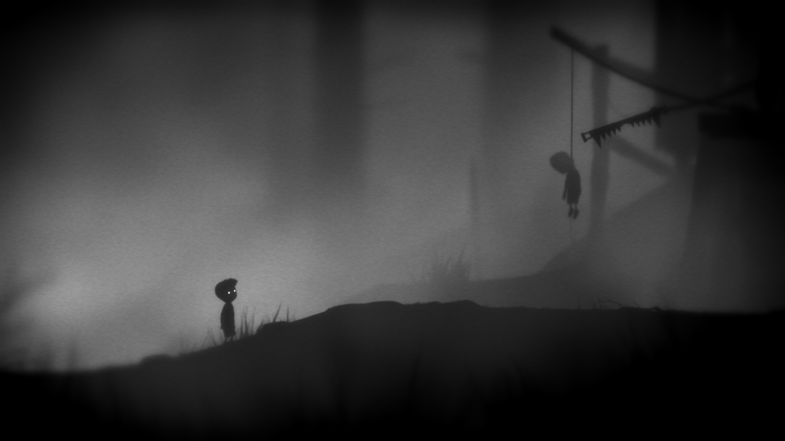

Engines of experience
What the hell is game desing?
Game Design

Two sides of GAME DESIGN
CREATIVE
TECHNICAL
Games
are engines
Games are composed of MECHANICS, which define how the game works.

During play, mechanics and players interact to generate EVENTS.
To be meaningful, an event must provoke EMOTION.
The valuable emotions of play can be very subtle. Usually, they’re subtle enough that players DON'T CONSCIOUSLY detect them.
Detecting and understanding subtle emotions is a DESIGNER SKILL.

The emotions of play are not limited to "FUN".
Your unconscious mind constantly analyzes your situation. When certain conditions are met, the unconscious triggers an EMOTIONAL RESPONSE.
An EMOTIONAL TRIGGER is some thing or observation that causes emotion.
To provoke emotion, an event must change some HUMAN VALUE.
A HUMAN VALUE is anything that is important to people that can shift through multiple states.
What’s emotionally relevant about an event is not the event itself, but the changes in human values implied by that event. The more important the human value and the more it changes, the greater the emotion.
Emotions don’t just appear in response to a change. They also appear in anticipation of change.
A reveal of information is emotionally equivalent to change.
We can’t directly perceive the logic behind our emotional triggers.
Even though we don’t know why we feel as we do, we effortlessly assign logical causes to our emotions without realizing it. These assumed causes are often wrong.
Emotional misattribution makes it hard to understand how games affect us.
The Basic Emotional Triggers
EMOTION TROUGH LEARNING

The more important a lesson is to a human value, the more we’re driven to learn it.
The skills that we’re instinctively driven to master are the ones that helped our ancestors reproduce.
The more intricate and nonobvious a lesson is, the greater the pleasure of learning it.

Players feel INSIGHT when they receive a new piece of information that causes many old pieces of information to suddenly make sense.
EMOTION TROUGH CHARACTER ARCS
EMOTION TROUGH CHALLENGE
EMOTION TROUGH SOCIAL INTERACTION
EMOTION TROUGH ACQUISITION
EMOTION TROUGH MUSIC
EMOTION TROUGH SPECTACLE
EMOTION TROUGH BEAUTY
EMOTION TROUGH ENVIRONMENT

EMOTION TROUGH NEWFANGLED TECHNOLOGY
EMOTION TROUGH PRIMAL TREATHS
EMOTION TROUGH SEXUAL SIGNALS

The fictionlayer
Mechanics gain another layer of emotional meaning when they are wrapped in Fiction.
Fiction and mechanics each create different kinds of emotions.
Fiction and mechanics can easily interfere with each other.
Because fiction and mechanics so easily interfere with each other, many games choose to emphasize one while mostly ignoring the other.
The pinnacle of game design craft is combining perfect mechanics and compelling fiction into one seamless system of meaning.
Constructing Experiences
An EXPERIENCE is an arc of emotions, thoughts, and decisions inside the player’s mind.
PURE EMOTION
JUXTAPOSITION
ANTAGONISTIC EMOTIONS
ATMOSPHERE
EMOTIONAL VARIATION

FLOW